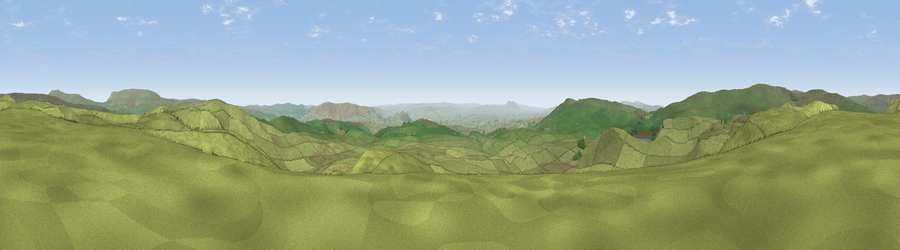

Viewpoint near Arncliffe
#7382 in England · top 9% of its area beats it · near ArncliffeWhere it is
The exact computed spot (SD 91775 67525). Click the marker for map links.
The view, rendered

A 360° render of this exact spot computed from the terrain model, tree cover and land cover — summer colours, afternoon light, calibrated against photographs of famous viewpoints. Real trees, hedges and buildings will differ in detail.
The panorama
Grey silhouette: terrain skyline in each direction (720 bearings, Earth curvature and refraction included). Dashed green: skyline with trees (+15 m) and buildings (+8 m) as obstacles. Blue strip: how far the ground is visible on each bearing.
Where the view opens
Wedge length = distance to the farthest visible ground on that bearing (vegetation-aware). Rings at 10, 25 and 50 km.
What fills the view
98% grassland · 1% woodland
Angular shares of the visible panorama (visual magnitude), not map area. Landscape diversity 0.04 (0–1 Shannon).
Key numbers
More beautiful places nearby
The staircase of upgrades: each row has a higher view potential than everything closer. Driving times are estimates from straight-line distance, calibrated against real road routing — check an actual route before setting out.
| Place | Direction | Drive | Score |
|---|---|---|---|
| Proctor High Mark | E · 2 km | ~5 min | 68.8 |
| Viewpoint near Stainforth | WNW · 5 km | ~11 min | 73.9 |
| Kirkby Fell | SW · 6 km | ~13 min | 74.5 |
| Pen-y-ghent | NW · 10 km | ~19 min | 75.8 |
| Viewpoint near Kettlewell | NE · 12 km | ~22 min | 76.6 |
| Viewpoint near Buckden | NNE · 12 km | ~22 min | 77.3 |
| Little Ingleborough | WNW · 18 km | ~32 min | 78.8 |
| Viewpoint near Ingleton | WNW · 19 km | ~33 min | 79.5 |
54.10355, -2.12728 · source: screening · position refined by local search. Computed location — check access rights before visiting.